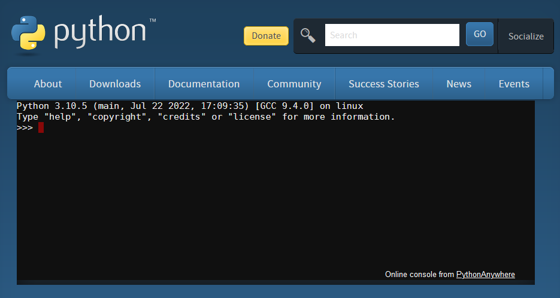

Interagir avec Python#
Il y a quatre principales façons d’interagir avec un interpreter Python :
REPL - en utilisant l’interpréteur Python de manière interactive,
Script - en faisant exécuter à l’interpréteur un script contenu dans un fichier
Jupyter - en utilisant un carnet électronique
IDE - en utilisant l’interpréteur au travers d’un environnement de développement intégré (Integrated Development Environment).
réecrire la suite, voir
https://realpython.com/interacting-with-python/
https://realpython.com/python-repl/
https://realpython.com/bpython-alternative-python-repl/
L’interpréteur Python peut exécuter le code Python selon deux modes :
le mode script (ou programme)
le mode interactif (ou REPL)
En mode script, l’interpréteur est utilisé pour exécuter un fichier source, c’est-à-dire un fichier texte qui contient le code. Dans ce cas, l’interpréteur Python charge le contenu du fichier et exécute le code ligne par ligne, en suivant le flux d’exécution. En mode interactif l’interpréteur Python propose une invite de commande à l’utilisateur qui saisi ses commandes en langage Python ligne par ligne.
est lorsque vous lancez l’interpréteur et l’utilisez comme une plate-forme pour exécuter un code que vous tapez directement.
Note
Le terme Python est souvent utilisé pour désigner deux choses différentes: la langue elle-même, et l’interprète.
Interface en ligne de commande (mode interactif)#
Un interpréteur Python peut être utilisé en ligne de commande (CLI, pour Command Line Interpreter en anglais). Cela permet d’exécuter le code Python de manière interactive, par exemple durant le développement d’un projet pour tester des idées ou pour apprendre le langage.
Interpréteur Python |
Description |
non du programme |
non du programme |
invite de |
|---|---|---|---|---|
CPython |
Implémentation de référence du langage Python écrit en langage C |
|
|
|
IPython |
Implémentation écrite en Python et plus interactive que CPython (à l’origine de Jupyter) |
|
|
|
Utiliser CPython en mode interractif#
Pour démarrer l’interpréteur de commande CPython, il faut ouvrir une interface de commande de votre système d’exploitation et saisir la commande python (python3 sous Linux) après l’invite de commande (ici C:\>). Sous Windows cela donne
C:\> python
Cette commande fait entrer CPython dans son mode interactif et on obtient un résultat qui ressemble à quelque chose comme ceci :
Python 3.11.7 | packaged by Anaconda, Inc. | (main, Dec 15 2023, 18:05:47) [MSC v.1916 64 bit (AMD64)] on win32
Type "help", "copyright", "credits" or "license" for more information.
>>>
La première ligne donne des informations sur la version de l’interpréteur Python et sur la plateforme sur laquelle il est utilisé. La deuxième ligne donne des commandes qui peuvent être exécuter pour obtenir plus d’information. La dernière ligne montre que l’interpréteur Python est prêt à accepter une commande en affichant l’invite de commande principale >>>. l’interpréteur dispose également d’une invite de commande secondaire ... pour saisir les instructions composée ou les commandes multilignes.
Il est possible d’obtenir le même résultat avec simplement un navigateur web, et de charger la page en ligne https://www.python.org/shell/.

A partir de l’invite de commande >>>, il est possible de saisir des commandes simple. En fin de chaque commande la touche Entrée ↵ doit être enfoncée.
>>> 12 + 23
35
>>> sum([12, 23, 34])
69
>>> 12 < 23
True
>>> 12 / 3
4.0
>>> 12 / 0
Traceback (most recent call last):
File "<stdin>", line 1, in <module>
ZeroDivisionError: division by zero
>>> a = 12
>>>
Examinons le comportement de l’interpréteur CPython :
12 + 23est une expression qui additionne deux entiers avec l’opérateur+, CPython affiche le résultatsum([12, 23, 34])est un appel à la fonctionsum()pour sommer les trois entiers d’une liste, CPython affiche le résultat12 < 23est une expression qui test si un entier est inférieur à un autre entier, CPython affiche le résultat12 / 3est une expression qui divise un entier par un autre, CPython affiche le résultat12 / 0est une expression qui divise un entier par 0, CPython affiche un code d’erreura = 12est l’affectation du nomaà l’ojbet Python “12”, CPython ne retourne aucune valeur, rien n’est affiché
On qualifie ce type d’intéraction avec l’interpréteur une interraction REPL (Read-Eval-Print Loop):
Lire la commande
Evaluer la commande
Afficher le résultat
Recommencer
Pour les instructions multilignes, par exemple les boucles for, les conditions if ou les définitions de fonction def, l’interpréteur affiche une invite de commande secondaire ... tant que l’instruction n’est pas entièrement saisie. La touche Entrée ↵ doit être enfoncée en fin de chaque ligne débutant par une invite >>> ou ....
>>> for i in [1, 2, 3]:
... print(i, i * i)
...
1 1
2 4
3 9
>>>
Utiliser IPython en mode interactif#
Pour démarrer l’interpréteur de commande IPython, il faut ouvrir une interface de commande de votre système d’exploitation et saisir la commande ipy. Sous Windows cela donne
C:\> ipython
Cette commande fait entrer IPython dans son mode interactif et on obtient un résultat qui ressemble à quelque chose comme ceci :
Python 3.11.9 | packaged by conda-forge | (main, Apr 19 2024, 18:27:10) [MSC v.1938 64 bit (AMD64)]
Type 'copyright', 'credits' or 'license' for more information
IPython 8.21.0 -- An enhanced Interactive Python. Type '?' for help.
In [1]:
Dans les deux cas, la sortie de l’interpréteur Python est obtenue en saisissant la commande exit() ↵
Réflexion en cours#
Vocabulaire : plateforme, architecture, machine, processeur, système, distribution
Linux, Windows, macOS plateforme logicielle: distribution = collection de composants logiciels architecture processeur : CISC (x64), RISC (mips, arm)
interface en ligne de commande (en anglais command line interface ou command line interpreter, couramment abrégé CLI)
invite de commande (en anglais: prompt)